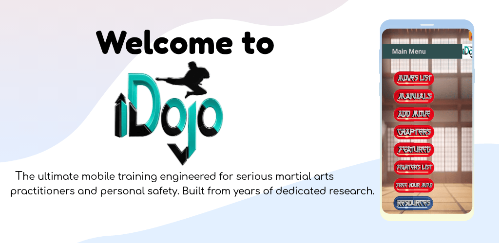
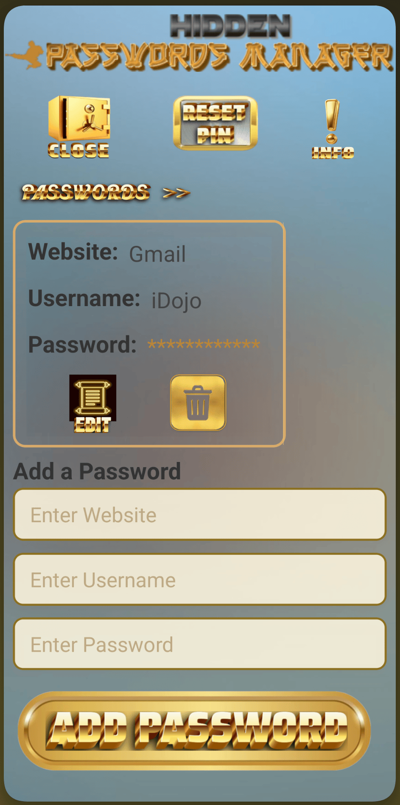
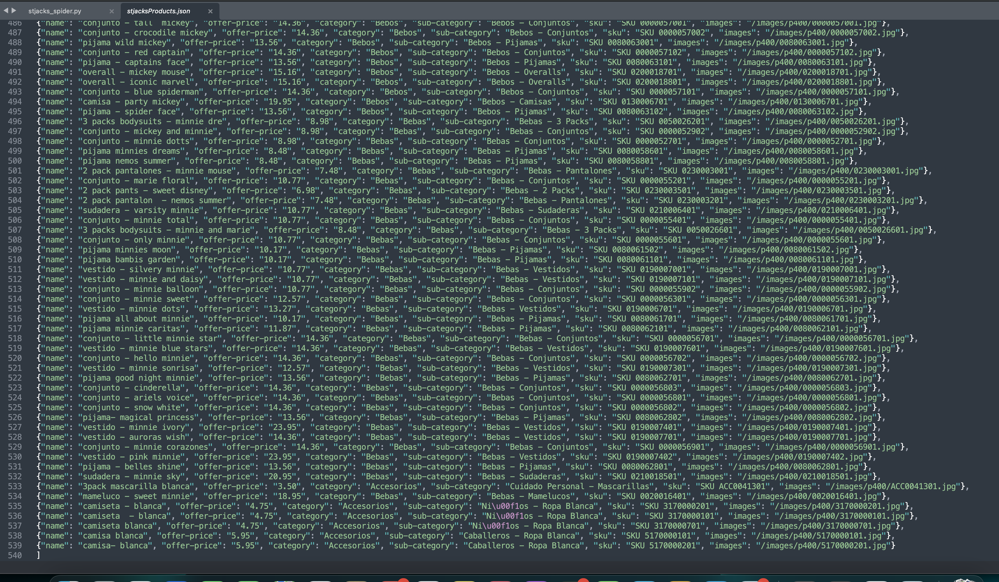
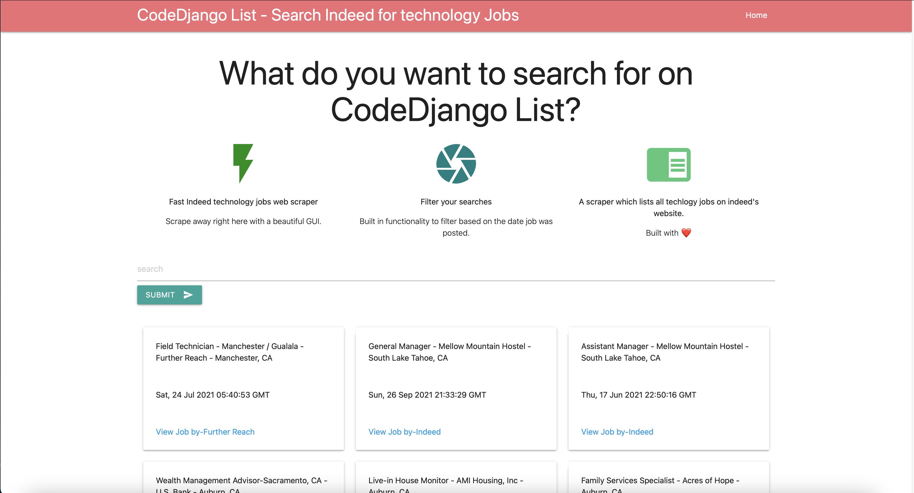

"iDojo" - React Native Mobile App

A React Native Project with Expo and react-navigation, pdf-viewer, expo-video, expo-audio, async-storage and more. Starting DojoSoft as a mobile software venture is an example of my best work designing and engineering iDojo, a cross-platform self-defense application. iDojo features user-generated content(UGC), dynamic content sharing, custom-built modular frameworks, and localized community features. It is an incredibly complex engineering feat that is worth a premium price. Building a social ecosystem where users can program their own "fighters, moves, and chapters" and sync them locally requires back-end coordination, custom database architecture, and deep algorithmic optimization.
iDojo Video Ad
• Implemented an advanced media playback engine featuring native, high-definition frame-by-frame slow-motion video rendering to enhance tactical learning.
• Architected a flexible custom storage layer allowing users to export, share, and locally import custom techniques via compressed ZIP data archives.
• Designed an offline-first architecture with optimized, localized data structures to maximize hardware resource efficiency, rendering speeds, and user privacy.
• Managed the full production pipeline via the Google Play Console, executing builds, managing licensing, and structuring one-time billing integrations.
import * as ImagePicker from 'expo-image-picker';
import { useAudioPlayer, useAudioPlayerStatus } from 'expo-audio';
import { View, Text, StyleSheet, Alert } from 'react-native';
import React, { useEffect, useRef, useState } from 'react';
const pickFighterMedia = async (target, moveId = null) => {
const { status } = await ImagePicker.requestMediaLibraryPermissionsAsync();
if (status !== "granted") {
Alert.alert("Permission Denied", "Gallery access is required!");
return;
}
try {
isPickingRef.current = true;
setIsPicking(true);
const res = await ImagePicker.launchImageLibraryAsync({ mediaTypes: ['images'], allowsEditing: false, quality: 1.0 });
if (res.canceled || !res.assets?.[0]?.uri) return;
const pickedUri = res.assets[0].uri;
const ext = getMediaFileExtension(pickedUri);
const cacheDir = `${FileSystem.cacheDirectory}fighter-cache/`;
await FileSystem.makeDirectoryAsync(cacheDir, { intermediates: true });
const cachedUri = `${cacheDir}${Date.now()}${ext}`;
await FileSystem.copyAsync({ from: pickedUri, to: cachedUri });
if (target === 'avatar') {
// Continuation of your logic...
}
} catch (error) {
console.error(error);
}
};iDojo allows users to add their own Fighters to the App and store them locally. The code above shows what happens when the user hits the add Fighter's avatar image button inside the App.
The expo-image-picker package is used to launch the image Library on the Android device.
The uri of the image selected by the user will be cached to the cachedDirectory, and the cacheduri is used when saving the Fighter to local storage.

Screenshot of the JavaScript function used to Add Fighter Images
A Password Manager
iDojo has a hidden Password manager in the App. Google and Apple policy requires the password manager to be reviewed to ensure all passwords stored must be encrypted. A complex, modern and very unique encryption algorithm is used. iDojo collects no user data so that in a case where a user forgets their PIN, it will be extremely difficult for their password data to be decrypted.
import { View, Text, TextInput, TouchableOpacity, StyleSheet, ScrollView } from 'react-native';
import React, { useEffect, useRef, useState } from 'react';
//Scrollview to display all passwords in a horizontal list.
{passwords.length === 0 ? (
No Passwords To Show
) : (
setIsReady(true)}>
{renderPasswordList()}
)}
{editing
? "Edit Password"
: "Add a Password"}
setWebsite(website)} />
setUsername(username)} />
setPassword(password)} />

Passwords are encrypted when the user clicks the Save Password button and therefore must be decrypted to be shown.
A complex and unique encrytption algorithm is used. It is not easy to design an encryption algorithm that can encrypt two of the same passwords differently.
For proper policy the password manager is known to Google and Apple but it cannot be seen in the App unless an invisible button is clicked.iDojo Intro Video
Screenshot of iDojo's Password Manager Screen
This script opens a Chrome browser in headless mode, then it visits the St Jacks hopepage and parses and scrapes all the product categories on the website. Next the script visits each category page and scrapes all the links to the pages that contain product details. Finally the script scrapes and yields all the product details found on each product details page.
I have written the Python code for web scrapers for numerous websites, such as Facebook, Indeed, Google Images, TheNorthFAce, RoadMarketGo and more. I have used Splash, Pupeteer and Phantom but I like to use Selenium with Beautiful Soup as they are very powerful web scraping tools.
Django
Django is a loosely coupled, server side web application development framework written in Python that responds to requests and constructs a response for the client.
Whenever a request is received by the Django server , the server looks for a matching pattern in the url Patterns defined for the project, a 404 error is returned if no match id found. If a match id found the view file associated with the url is executed and sent as the response.
Django uses MVT the controller is the view in Django. Views are based on data from models.
In Django there can be many apps and each app has its own urls.py file. In the urls.py file for the project the individual urls.py files are used by using the includes function.
Below is the urls.py file for a Django project with three apps , a projects app , a users app and an api app.
from django.contrib import admin
from django.urls import path, include
from django.conf import settings
from django.conf.urls.static import static
from django.contrib.auth import views as auth_views
urlpatterns = [
path('admin/', admin.site.urls),
path('projects/', include('projects.urls')),
path('', include('users.urls')),
path('api/', include('api.urls')),
path('reset_password/', auth_views.PasswordResetView.as_view(template_name="reset_password.html"),
name="reset_password"),
path('reset_password_sent/', auth_views.PasswordResetDoneView.as_view(template_name="reset_password_sent.html"),
name="password_reset_done"),
path('reset/
A model in Django is a Python class derived from Django.db.models. A model is used to represent a table and map database entities to a table.
Below is an example of a models.py file for a Django Application. There are three models in this file, A Project model, A Review model and a Tag model. The Review model related to the project model by using a foreign key. Both the Project model and review model are foreign keys in the owner Profile model not shown.
from django.db import models
import uuid
from django.db.models.deletion import CASCADE
from users.models import Profile
# Create your models here.
class Project(models.Model):
owner = models.ForeignKey(
Profile, null=True, blank=True, on_delete=models.CASCADE)
title = models.CharField(max_length=200)
description = models.TextField(null=True, blank=True)
featured_image = models.ImageField(
null=True, blank=True, default="default.jpg")
demo_link = models.CharField(max_length=2000, null=True, blank=True)
source_link = models.CharField(max_length=2000, null=True, blank=True)
tags = models.ManyToManyField('Tag', blank=True)
vote_total = models.IntegerField(default=0, null=True, blank=True)
vote_ratio = models.IntegerField(default=0, null=True, blank=True)
created = models.DateTimeField(auto_now_add=True)
id = models.UUIDField(default=uuid.uuid4, unique=True,
primary_key=True, editable=False)
def __str__(self):
return self.title
class Meta:
ordering = ['-vote_ratio', '-vote_total', 'title']
@property
def imageURL(self):
try:
url = self.featured_image.url
except:
url = ''
return url
@property
def reviewers(self):
queryset = self.review_set.all().values_list('owner__id', flat=True)
return queryset
@property
def getVoteCount(self):
reviews = self.review_set.all()
upVotes = reviews.filter(value='up').count()
totalVotes = reviews.count()
ratio = (upVotes / totalVotes) * 100
self.vote_total = totalVotes
self.vote_ratio = ratio
self.save()
class Review(models.Model):
VOTE_TYPE = (
('up', 'Up Vote'),
('down', 'Down Vote'),
)
owner = models.ForeignKey(Profile, on_delete=models.CASCADE, null=True)
project = models.ForeignKey(Project, on_delete=models.CASCADE)
body = models.TextField(null=True, blank=True)
value = models.CharField(max_length=200, choices=VOTE_TYPE)
created = models.DateTimeField(auto_now_add=True)
id = models.UUIDField(default=uuid.uuid4, unique=True,
primary_key=True, editable=False)
class Meta:
unique_together = [['owner', 'project']]
def __str__(self):
return self.value
class Tag(models.Model):
name = models.CharField(max_length=200)
created = models.DateTimeField(auto_now_add=True)
id = models.UUIDField(default=uuid.uuid4, unique=True,
primary_key=True, editable=False)
def __str__(self):
return self.name
Serialisation is the process of converting Django models into other formats such as JSON, XML, CSV, etc.
Below is the serializers.py file for the same Django project mentioned above. the file contains all serializers for the entire project including the Profile serializer. Notice the inner meta class is used to define which fields of the model will be serialized. Also the Profile serializer uses a method field which must be obtained fram a function beginning with get_ , which is in this case get-reviews
from rest_framework import serializers
from projects.models import Project, Tag, Review
from users.models import Profile
class ReviewSerializer(serializers.ModelSerializer):
class Meta:
model = Review
fields = '__all__'
class ProfileSerializer(serializers.ModelSerializer):
class Meta:
model = Profile
fields = '__all__'
class TagSerializer(serializers.ModelSerializer):
class Meta:
model = Tag
fields = '__all__'
class ProjectSerializer(serializers.ModelSerializer):
owner = ProfileSerializer(many=False)
tags = TagSerializer(many=True)
reviews = serializers.SerializerMethodField()
class Meta:
model = Project
fields = '__all__'
def get_reviews(self, obj):
reviews = obj.review_set.all()
serializer = ReviewSerializer(reviews, many=True)
return serializer.data
Django Templates are used to dynamically generate web content based on data passed in from the View. The Django Templating Language parses, processes and converts the template to an HTTP response. Templates can be part of other templates in Django the extends and end block statements are used to insert sub-Templates as blocks into Templates. The Django REST framework is a Django app and framework makes the creation of REST APIs easy.
Below is the main template for the Django Application. The css files are loaded using static files. The navbar template is included and there is an empty block for other templates to be insterted.
<!DOCTYPE html>
{% load static %}
<html>
<head>
<meta charset="UTF-8" />
<meta http-equiv="X-UA-Compatible" content="IE=edge" />
<meta name="viewport" content="width=device-width, initial-scale=1.0" />
<link rel="shortcut icon" href="images/favicon.ico" type="image/x-icon" />
<link rel="stylesheet" href="https://cdn.iconmonstr.com/1.3.0/css/iconmonstr-iconic-font.min.css" />
<link rel="stylesheet" href="{% static 'uikit/styles/uikit.css' %}" />
<link rel="stylesheet" href="{% static 'styles/app.css' %}" />
<title>DevSearch - Connect with Developers!</title>
</head>
<body>
{% include 'navbar.html' %}
{% if messages %}
{% for message in messages %}
<div class="alert alert--{{message.tags}}">
<p class="alert__message">{{message}}</p>
<button class="alert__close">x</button>
</div>
{% endfor %}
{% endif %}
{% block content %}
{% endblock content %}
</body>
<script src="{% static 'uikit/app.js' %}"></script>
<script src="{% static 'js/main.js' %}"></script>
</html>
The Object Relational Mapper - In Django there is no need to query data with SQL. The ORM allows interacting with the database using an object of the model class. The ORM converts these SQL queries based on the database registered in the settings.py file for the Django project. A Query Set is a collection of objects from the database. A group of rows or records is returned as a Query Set.
Middleware is a layer in the Django request, response processing pipeline. Each Middleware performs functions on the request and or response, such as gzipping, caching, and authenticating. Javascript is added in Django by adding script tags into templates. Javascript and CSS files can be stored using Django.contrib.staticfiles and these static files can be used in Templates by using the link tag.
The built in Django Admin interface allows making changes to database models registered in the admin.py file of the project.
A View in Django is a class or function that receives a request and returns a response. A View gets data from the database using models and passes that data to a template (usually as a context dictionary). After passing the data, the View then sends back the rendered template to the client as an HTTP response. Views also allow redirects to urls. This is a Django View written in Python. The View responds to requests by extracting a search term from the url then it uses beautiful soup to begins scraping craigslist for the extracted term. Once the list of results are fetched from craigslist the View sends the data with the response to the Template
def new_search(request):
search = request.POST.get('search')
models.Search.objects.create(search=search)
final_url = BASE_CRAIGSLIST_URL.format(quote_plus(search))
response = requests.get(final_url)
data = response.text
soup = BeautifulSoup(data, features='html.parser')
post_listings = soup.find_all('li', {'class': 'result-row'})
final_postings = []
for post in post_listings:
post_title = post.find(class_='result-title').text
post_url = post.find('a').get('href')
if post.find(class_='result-price'):
post_price = post.find(class_='result-price').text
else:
post_price = 'N/A'
if post.find(class_='result-image').get('data-ids'):
post_image_id = post.find(
class_='result-image').get('data-ids').split(',')[0].split(':')[1]
post_image_url = BASE_IMAGE_URL.format(post_image_id)
else:
post_image_url = 'https://craigslist.org/images/peace.jpg'
final_postings.append(
(post_title, post_url, post_price, post_image_url))
stuff_for_frontend = {
'search': search,
'final_postings': final_postings,
}
return render(request, 'my_app/new_search.html', stuff_for_frontend)
I like Django a lot and I have been using it for over 5 years. I completed the Python Django course on Udemy by Mr. Dennis Ivy and I have recently worked with the Django REST framework to design and implement Views, Viewsets , Filters ,Unit Tests ,Serialisers, Templates, APIs, URL patterns, Styles and Models for a Django application. I have written view sets that use recursive actions to query data in a specific order. I love programming in Python which I have used for writing a cartoon yourself web application , a few Data Science applications and numerous awesome web scrapers and scripts. This is the link to my ⭐️”Python Django Cartoon Yourself Web Application” that can also scrape craigslist and indeed: http://codedjangolist.herokuapp.com
Below is a screenshot of my Python Django Cartoon Yourself Web Application. This screenshot was taken after clicking on the green search arrow icon of the search indeed page. The screenshot shows the results provided by the app after scraping the website.

As a Software Engineer and Computer Scientist I prefer React for developing Front Ends for web applications with many components on the page , like the Facebook user profile page for example. Applications with search bars, chat boxes, news and weather sections, post lists and user lists on one page run better when components reload only when the user makes a change to one of them. React also provides memoization for components that render the same elements every time they receive the same props, like a component for the daily news or weather for example. Django has pagination and views that help with long list but React has a neat library that uses the window height to help with long lists as well as pagination. Django can be used as a powerful backend and one of its disadvantages is that it is too bulky. Django can handle heavy traffic, APIs are easy to build and it is scalable so it is an excellent choice to use as a backend for web applications with large number of users.